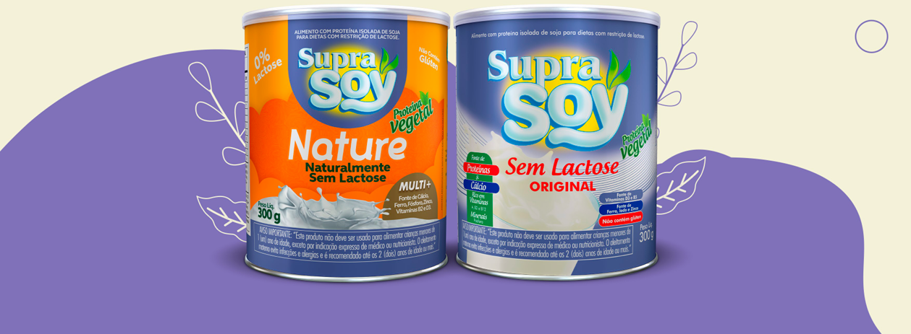

Guanabara Barra & Recreio
Degustação SupraSoy
Evolução da ação.
Este painel junta essa contagem de campo com o estoque real do ponto de venda, separando o que foi anunciado do que foi vendido de fato.

SupraSoy Original e Nature — parte da linha acompanhada neste painel, junto ao Sachê
Evolução mensal — vendas reais
Cada barra é um mês, empilhada por SKU. Cada semana de contagem conta inteira no mês em que cai a maioria dos dias. Julho começa em 14/07 e o mês corrente está em andamento, então os meses não são totalmente comparáveis. Passe o mouse para ver o detalhe.
Previsão × Real, por mês
A previsão soma os dias em que o formulário foi respondido naquele mês; as vendas reais vêm da contagem de estoque, por semana. Em meses com cobertura parcial do formulário, a previsão fica artificialmente baixa.
Mix de produto
Participação de cada SKU no total vendido, no período filtrado.
Evolução semanal — vendas reais
Cada barra é uma semana de contagem de estoque. Passe o mouse para ver o detalhe.
Detalhamento por semana
Vendas reais por SKU e por loja, semana a semana desde o início da ação.
| Semana | Loja | Original | Nature | Sachê | Total | Cresc. vs sem. ant. |
|---|